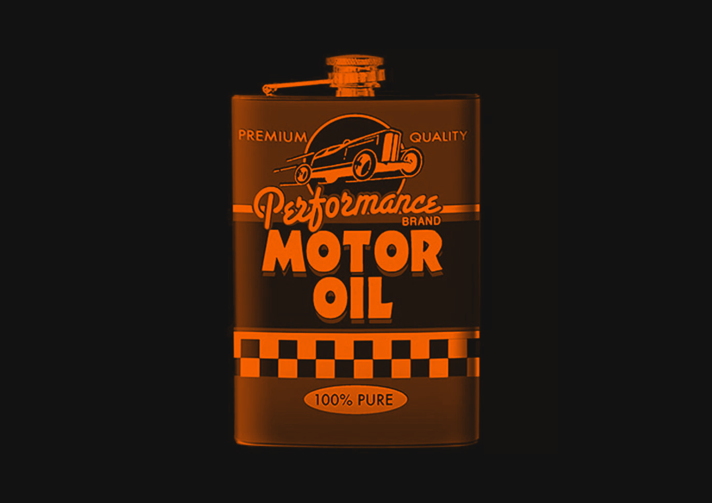
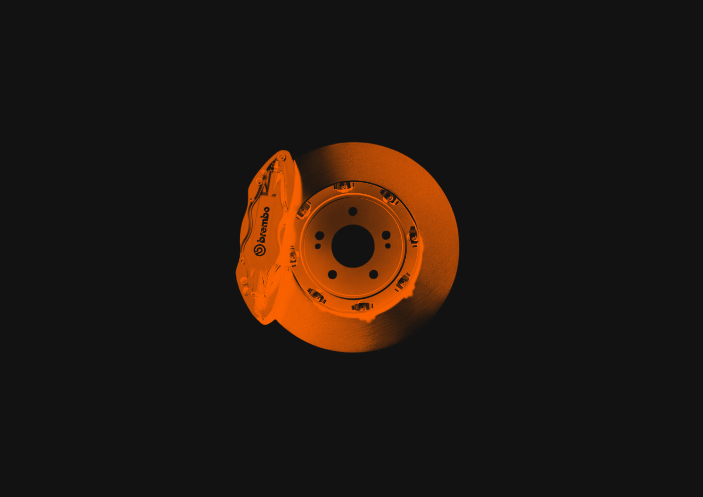
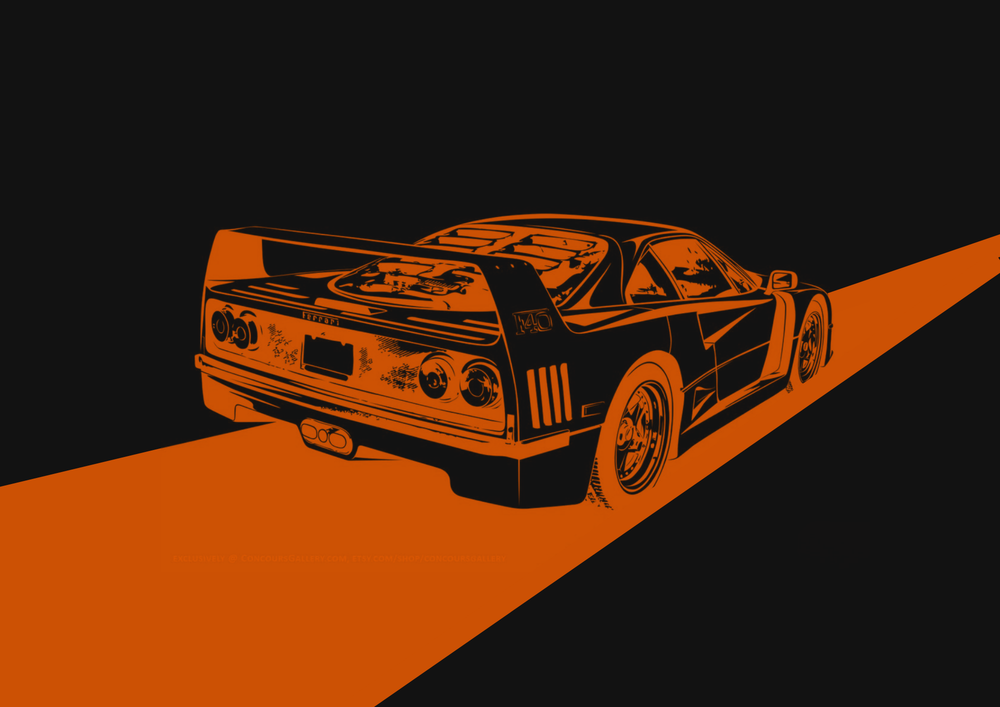
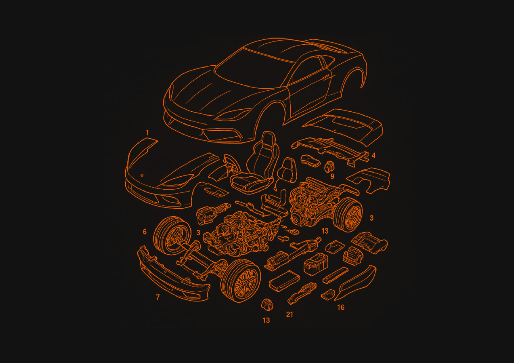

Oswaldo Motors

O sistema da Oswaldo Motors foi criado para organizar o dia a dia da oficina: cadastro de clientes e veículos, controle de serviços e peças, cálculo automático do valor final (com acréscimo de 20% na mão de obra para peças importadas) e consulta rápida do histórico de cada carro pela placa. Tudo pensado para funcionar bem no celular, com botões grandes e fáceis de usar.




| Serviço | Preço (mão de obra) | Prazo médio |
|---|---|---|
| Troca de óleo e filtro | R$ 80,00 | 30 min |
| Alinhamento e balanceamento | R$ 120,00 | 1h |
| Revisão do sistema de freios | R$ 150,00 | 1h30 |
| Diagnóstico eletrônico | R$ 100,00 | 45 min |
| Troca de peças importadas | R$ 200,00 + 20% | 2h |